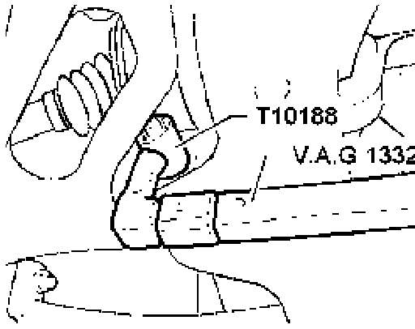
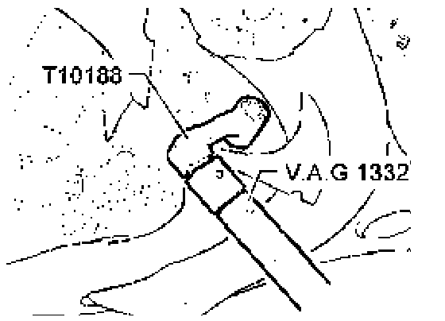
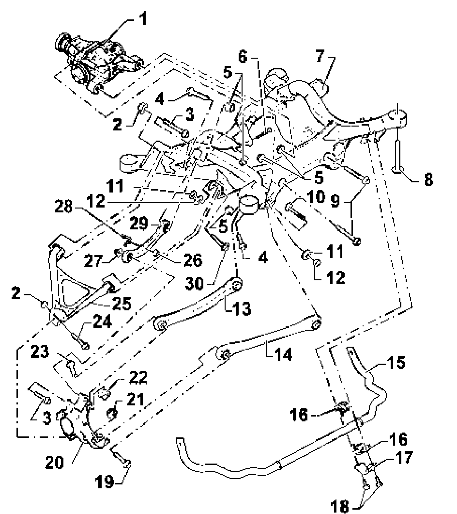
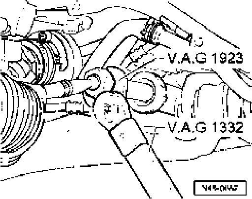

Wheel Alignment Specifications
Wheel alignment specifications
Front axle

Tightening camber adjustment bolt using special tool T10188.

Tightening caster adjustment bolt using special tool T10188.
Front toe
Loosen lock nut and, if necessary, dust boot clamp, rotate tie-rod to adjust toe.
Rear axle
Rear Camber

- Rotate eccentric to adjust camber item 11.
- Tighten locknut to 180 Nm item 12.
Rear toe
- Rotate eccentric to adjust Toe item 30.

- Tighten locknut to 180 Nm item 11.
Measurement requirements
- Vehicle unladen
- Fuel tank must be full
- Spare wheel and vehicle tool box must be in vehicle and correctly stowed.
- The windshield/head light wash reservoir must be full.
- Difference in tread depth on a given axle to be no more than 2 mm.
- Tires must be inflated to specified pressure.
- Assemble alignment equipment is in accordance with the equipment manufacturers instructions (refer to Operators Manual).
- Check suspension, steering and steering gear for excessive play or damage.
- Alignment should be conducted on new vehicle after driving between 1000 to 2000 km to allow the suspension components to settle.
- Check that the rims are not damaged at rim lip or shoulder.